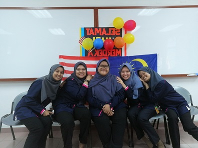

This websites for IMS456 |

My Best Friend
| Alya Natasya She is my neighbor and we have been good friends since childhood. In the past, we always went to kindergarten together. Alya is a good, smart, funny and beautiful person. We were together from kindergarten until elementary school. At the university level, we study at the same institution. After getting her STPM results, Alya continued her studies at UiTM Merbok, Kedah taking a Bachelor of Business Administration (Hons) International Business and now she is in semester 2. | Nabilahtul Adawiyah Our first met in 2009 at a religious school. Nabilahtul is a good, funny, smart, and very loving person. She was one of my friends who was always by my side and it was not easy to show her grief to others. She studied at the Sultan Abdul Halim Muadzam Shah Polytechnic Jitra, Kedah, and majored in a Diploma in Information Technology and now she is struggling completing her internship in Jitra, Kedah. |
My School Friend
I have a lot of friends at my school and create a lot of memories with my classmates. Now, the group of girlfriends are still close and still friends until now. We created memories together during school until now I will never forget because for me the time at school with them is the most meaningful time. |
My University Friend
 These are my friends during my diploma. While at university, we always do activities together such as going to class, eating, hanging out, doing assignments, going to events in the university, and going back to the village together. Getting to know them is impressive to me that everyone has a different perspective that is not expected. We created a lot of memories together but not long after the emergence of the COVID-19 pandemic, we were separated and each had to study at home. The four of them have continued their studies at UiTM Puncak Perdana and took the Bachelor of Information Science (Hons) Information Systems Management. Until now we are still connected. |
This websites for IMS456 |